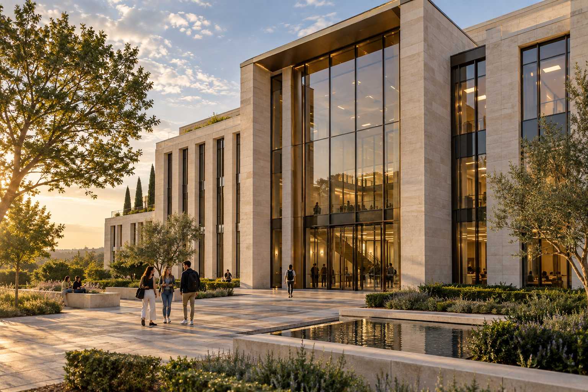
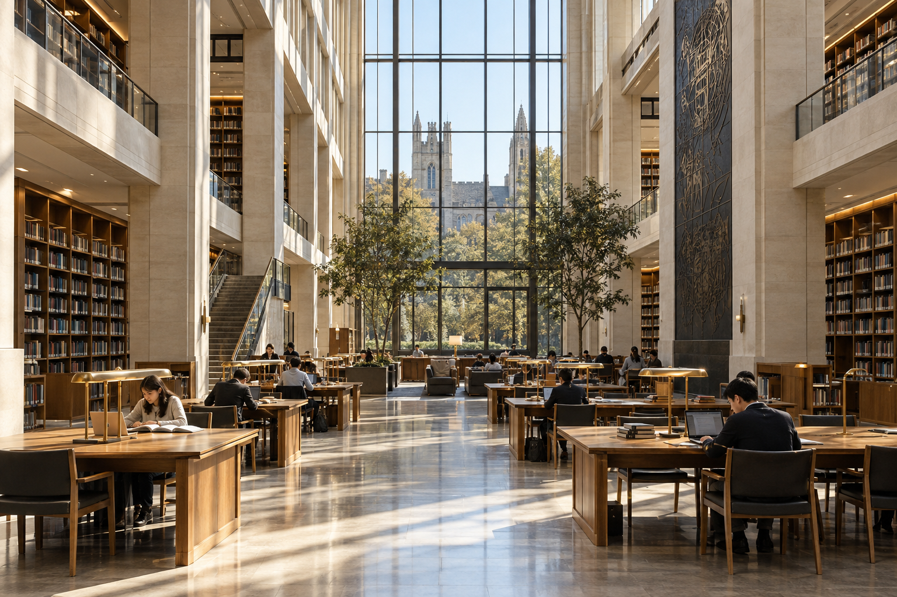

Homepage hero
1536 × 1024 px · Hero panel
Original PNG · Lossless WebPAll originals are large 3:2 landscape images. Their source size does not dictate their size on the page. The hero fills its panel; the other four are displayed as smaller cards. No slicing is needed.

1536 × 1024 px · Hero panel
Original PNG · Lossless WebP
1536 × 1024 px · Homepage card
Original PNG · Lossless WebP1536 × 1024 px · Homepage card
Original PNG · Lossless WebP1536 × 1024 px · Homepage card
Original PNG · Lossless WebP1536 × 1024 px · Homepage card
Original PNG · Lossless WebP